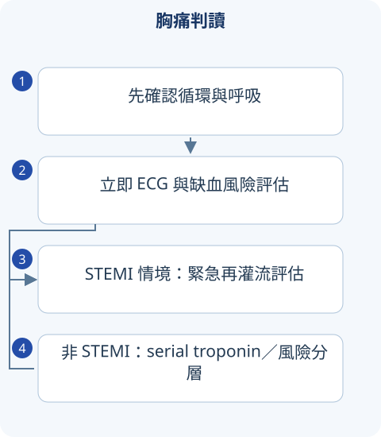

判讀圖解

詳讀 01冠狀動脈缺血的機轉與症狀
穩定型心絞痛通常是固定狹窄使活動時供氧不足；ACS 常是斑塊破裂或侵蝕導致急性血栓。心肌氧需求受心率、收縮力與壁張力影響；貧血、缺氧、低血壓或快速心律亦可造成供需失衡。Type 1 MI 是急性粥樣血栓，type 2 MI 是供需失衡且具缺血證據，單純 troponin 高但無缺血證據屬心肌損傷。
- 典型心絞痛為胸骨後壓迫感、活動／情緒誘發、休息或 nitrate 緩解；三項全有較典型，但症狀描述不能取代風險評估。
- 糖尿病、年長者或部分女性可能以喘、疲倦、噁心表現。可壓痛或疼痛不典型都不能獨立排除 ACS。
- 持續胸痛、昏厥、低血壓、肺水腫或危險心律提示高風險，先處理穩定度，同步排除剝離、PE、張力性氣胸與填塞。
詳讀 02ECG 與 troponin 的正確判讀
懷疑 ACS 需儘快取得 12 導程 ECG；症狀持續而首張正常時重複。下壁梗塞可加右胸導程評估右室梗塞；V1–V3 ST depression、較高 R 波可考慮後壁梗塞並加 V7–V9。新 LBBB 本身不能直接當成所有病人的 STEMI 診斷。
ST elevation 一般需兩個相鄰導程；除 V2–V3 外常用 ≥1 mm。V2–V3 的門檻依性別、年齡：女性 ≥1.5 mm，男性 ≥40 歲 ≥2 mm，<40 歲 ≥2.5 mm。仍須整合缺血癥狀，排除早期再極化、心包炎等模仿疾病。
Troponin 超過 assay 的 99th percentile 表示心肌損傷；急性上升／下降再搭配缺血癥狀、ECG、影像或血栓證據才能診斷 MI。hs-troponin 的 0/1 或 0/2 小時流程取決於檢驗法，不能用未驗證的固定 delta 套各院。
詳讀 03穩定型胸痛：檢查如何選
先用年齡、症狀與危險因子估計冠心病機率。低風險不一定需要影像；適合者用冠狀動脈 CTA 看解剖狹窄，或用運動／藥物壓力影像看功能性缺血。能運動且靜息 ECG 可判讀者才較適合單純 exercise ECG；LBBB、paced rhythm 或 baseline ST 異常會降低判讀價值。
抗心絞痛治療著重 β-blocker、CCB、nitrate 等的症狀控制；抗血小板與降脂著重事件預防。變異型／冠狀動脈痙攣常在休息時發作、暫時 ST elevation，以 CCB 和 nitrate 為重要選擇，不能與固定狹窄心絞痛完全同樣處理。
詳讀 04STEMI 再灌流：要會時間與禁忌
符合急性 STEMI、通常症狀 <12 小時者優先考慮 primary PCI。2025 ACS 指引常用首度醫療接觸至 device ≤90 分鐘；需轉院者目標 ≤120 分鐘。若預期不能在合適時間完成 PCI，且沒有禁忌，可考慮 fibrinolysis，之後仍需轉送具 PCI 能力中心。
- 溶栓重要禁忌包括既往顱內出血、疑似主動脈剝離、活動性出血及特定近期中風／顱內病灶；逐項評估，不能只問有沒有胃潰瘍。
- NSTEMI 不以纖維蛋白溶解治療；侵入策略依持續缺血、休克、心律不穩定與風險分層決定。
- 右室梗塞可依賴前負荷，低血壓時 nitrate 可能惡化；近期 PDE5 inhibitor 與 nitrate 合用可嚴重低血壓。
詳讀 05抗栓、支援治療與出院後管理
DAPT 是 aspirin 加 P2Y12 inhibitor；抗凝作用在凝血級聯，兩者不是替代關係。ACS 的 DAPT 常以 12 個月為預設，但會依出血風險、口服抗凝需求與介入情況縮短或調整。高強度 statin、戒菸、心臟復健及控制共病同樣是治療。
氧氣用於低血氧等需要者，不對血氧正常病人常規給。Morphine 不是每位病人必給，也可能影響口服抗血小板吸收。急性心衰竭、休克或傳導問題時不能機械式立即給 β-blocker。
詳讀 06心肌梗塞併發症：時間、雜音與超音波
| 新變化 | 考慮 | 判斷重點 |
|---|---|---|
| 突然休克、肺水腫、新收縮期雜音 | 乳突肌斷裂造成急性 MR | 緊急 echo；急性 MR 的雜音可能不明顯 |
| 胸骨左緣粗糙全收縮期雜音、休克 | 心室中隔破裂 | 左至右分流；需緊急心外評估 |
| 突然 PEA、心包積液 | 自由壁破裂、心包填塞 | 床邊 echo，不能只當一般心律不整 |
| 早期或數週後胸膜性痛 | 梗塞後心包炎／Dressler syndrome | 和再梗塞分開；看疼痛、ECG、影像 |
寬表格可左右捲動
肺炎病人 troponin 升高，是否直接診斷 NSTEMI？
先辨識急性升降及缺血證據。Sepsis 可造成心肌損傷，也可造成 type 2 MI；只有 troponin 陽性不足以診斷 type 1 ACS 或套用完整抗栓處置。
比較表速覽
讀完上方詳解後，用以下表格複習診斷差異與治療重點。
速覽｜1｜胸痛先排致命原因
生命徵象、ECG 與病史同步進行；胸痛強弱與危險程度並不成正比。
| 病因 | 線索 | 診斷方向 |
|---|---|---|
| ACS | 壓迫感、活動或休息時發作，可伴出汗／喘 | 重複 ECG、serial hs-troponin 與缺血證據。 |
| 主動脈剝離 | 突發胸背痛、灌流差 | CTA／適合的牀邊影像。 |
| 肺栓塞 | 突然喘、胸膜性痛、血栓風險 | 先估 pretest probability，再選 D-dimer／CTPA。 |
| Tension pneumothorax | 單側呼吸音減弱、休克 | 臨牀高度懷疑且不穩定時不能等常規影像才處理。 |
| 心包填塞 | 低血壓、JVP 高、心搏快 | 牀邊 echo 與緊急處置評估。 |
寬表格可左右捲動
速覽｜2｜Stable angina、UA、NSTEMI、STEMI
急性心肌損傷需要 troponin 上升／下降；診斷 MI 還要有缺血證據。
| 類型 | 症狀／心電圖 | 生物標記／決策 |
|---|---|---|
| Stable angina | 可預測的活動性胸痛，休息緩解 | 依穩定冠心病風險選擇檢查與治療。 |
| Unstable angina | 新發、加劇或休息性缺血症狀 | 沒有達 MI 定義的 troponin 證據；需整體風險判斷。 |
| NSTEMI | 可有 ST depression／T inversion，也可能 ECG 不明顯 | 急性 troponin 變化＋缺血證據，評估侵入策略。 |
| STEMI | 符合導程與門檻的持續 ST elevation 等缺血圖形 | 緊急再灌流評估，不等 troponin 才啟動。 |
寬表格可左右捲動
CKD、sepsis、tachyarrhythmia 也可升高 troponin；「troponin 陽性」不自動等於 type 1 MI。
速覽｜3｜抗缺血與二級預防
抗血小板、抗凝與再灌流是不同功能；藥物須配合出血風險與介入計畫。
| 處置 | 目的 | 考點 |
|---|---|---|
| Aspirin＋P2Y12 inhibitor | 抗血小板 | 療程與種類依 ACS／PCI、出血及抗凝需求調整。 |
| Anticoagulant | 抑制凝血 | 不能把抗凝視為 aspirin 的同義替代。 |
| Nitrate | 減少症狀與負荷 | 低血壓、右心梗塞及近期 PDE5 inhibitor 等情境需避免／評估。 |
| Statin、戒菸與復健 | 二級預防 | 解除胸痛後仍需持續風險管理。 |
寬表格可左右捲動
舊式 MONA 口訣不能當作人人都照順序給藥的處置流程。
情境練習
胸痛突然達到最劇烈，放射背部，能先套 ACS 抗栓口訣嗎？
指引與公告補充
以下補充已依列出的版本核對；與 2020 年參考書的學習整理分開標示。
ACS 病人血氧 ≥90% 時，不建議常規補充氧氣；再灌流與抗栓仍需完整風險評估。 查閱來源
來源與版本
書籍學習來源：《國考分科詳解—醫學（三）》2020 年版，第 1 冊〈心內・胸內〉；本頁對應章節導讀位置為 PDF 第 59–92 頁（含封面，與書內印刷頁碼不同）。
依章節重寫比較與判讀重點；指引補充另列版本。圖解與情境練習為本站原創。核對日：2026/09/30。
詳細補充的來源範圍
上方「詳讀」為依原參考書主題架構重寫的基礎、臨床判讀與國考複習說明；原表格保留於速覽區。數值適用條件及舊題版本差異寫於對應小節；本頁未逐題收錄所有歷屆試題。
本輪擴充：2026/10/05。指引連結支援各自的更新主題；基礎病生理、藥物機轉與鑑別依書籍架構整理。